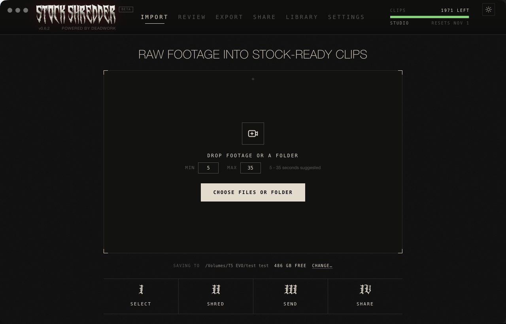

The short version
Steps 5 and 6 are where the hours go. Stock Shredder cuts, grades and exports 1,000 clips in 3 hours 1 minute in our test.
Every stock shooter runs some version of the same process. The order matters, because a mistake early (a missing release, a log clip exported without a grade) costs you a rejection later.
Steps 1 to 4 take minutes per shoot once you have a routine. Steps 5 and 6 take hours. That's the part this guide spends the most time on.
Pick subjects buyers already search for: everyday life, work, food, nature, cities, seasons. Then plan the shots: wide, medium and close on each subject, with a few seconds of clean action in each.
Pack the same way every time so nothing is missing on location. Our camera gear checklist covers the kit, and the two-minute gear check makes sure it all comes home.
Copy every card to two drives before you format it. Name the folder by date and place so you can find the shoot again in a year. This is also the folder you'll point your clip tool at in step 5.
Go through the shoot once and split it into three piles: sell commercially, editorial only (news-style use, no releases), and skip. Client work needs a rights check first. Our old footage archive guide walks through the rights questions.
This is where most workflows stall. By hand, every clip means:
Our average is about 2 minutes per clip. A drive of 500 clips is more than 16 hours of editing, and that's before keywords.
Point Stock Shredder at the folder from step 3 on your Mac or Windows computer, set the clip length, and let it run.

You review the results and approve or deny each clip. Shooting Sony log? See Sony FX3 and FX6 footage to stock clips.
Real Sony FX6 and FX3 footage on a MacBook Pro M3 Pro, exported to an external SSD as graded ProRes 422 HQ 4K.
| 4K clips | Stock Shredder | By hand |
|---|---|---|
| 100 | 16 min | 3+ hours |
| 500 | 1 hr 19 min | 16+ hours |
| 1,000 | 3 hr 1 min | 33+ hours |
Stock Shredder time is shred plus export. Review time not included. By hand: 2 minutes per clip average.
Before anything goes up, check each clip against the site's rules. The free stock clip spec checker compares one clip against Adobe Stock, Pond5 and Shutterstock, and the full list is in stock footage requirements for Adobe, Pond5 and Shutterstock.
Then write a title and keywords for every clip. On Pro and Studio, Stock Shredder writes a title, a description and keywords for each exported clip, and you check them before upload.
Writing your own? Run them through the free title and keyword checker first.
Upload to each site, then fill in the metadata. Stock Shredder saves upload sheets for Pond5, Adobe Stock and Shutterstock on Pro and Studio, and can send clips straight to Shutterstock and Pond5. Already have one sheet? The free upload sheet converter turns it into each site's format.
Read every rejection, fix the cause in your workflow, and run the next drive. Site-by-site steps: Adobe Stock, Pond5 and Shutterstock.
Stock Shredder handles the repetitive parts. A few things stay with you.
Once a shoot turns into hundreds of clips, steps 5 and 6 decide how much of it ever gets online. That is the part worth handing off. For the money side, read how to make money selling stock footage.